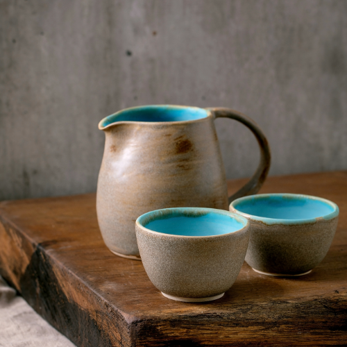
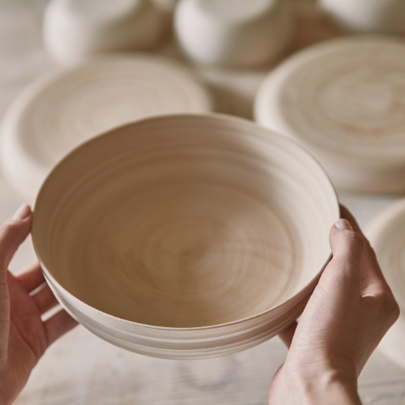
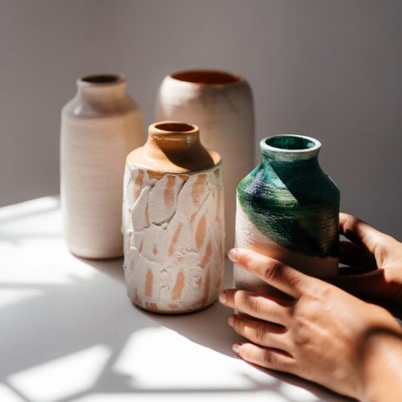
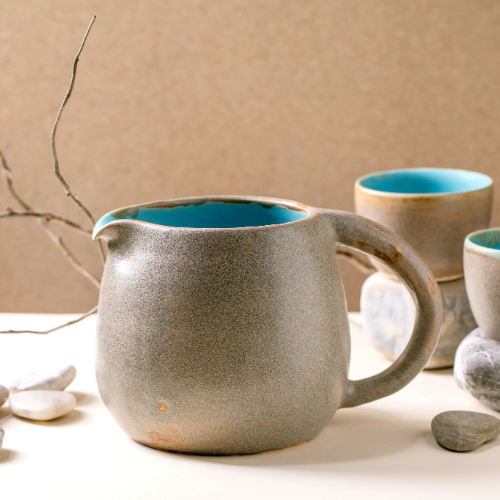
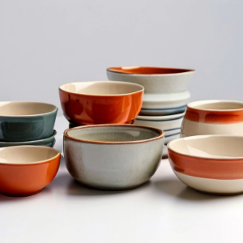
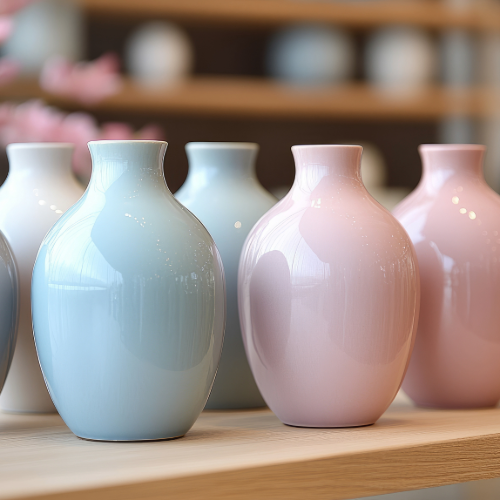

Explora nuestras creaciones
Cada pieza de nuestra colección es única y cuenta una historia. Trabajamos con diferentes tipos de arcillas y técnicas para ofrecer una amplia variedad de productos, desde piezas utilitarias hasta decorativas.



Destacados de nuestra galería



- Vasos de gres: Ideales para uso diario, hechos con arcilla gres, esmaltados a mano y cocidos a altas temperaturas.
- Jarrones de porcelana: Delicados y elegantes, con un toque moderno en su diseño minimalista.
- Platos decorativos de terracota: Inspirados en la naturaleza, decorados con engobes en tonos terrosos y texturas suaves.
Cada creación se realiza con técnicas tradicionales y modernas para ofrecerte piezas funcionales y llenas de arte.